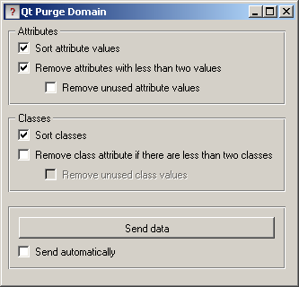
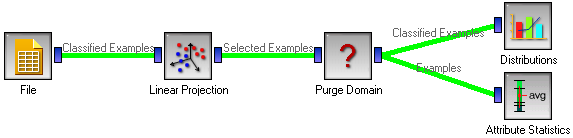
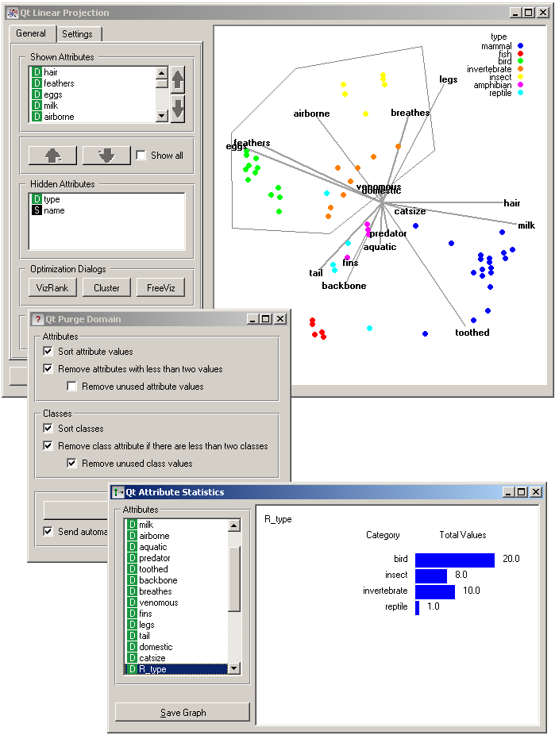

This is documentation for Orange 2.7. For the latest documentation, see Orange 3.
Purge Domain¶
Removes the unused attribute values and useless attributes, sorts values of the remaining.
Signals¶
Inputs:
- Examples (ExampleTable)
A data set.
Outputs:
- Examples (ExampleTable)
Filtered data set
Description¶
Definitions of nominal attributes sometimes contain values which don’t appear in the data. Even if this does not happen in the original data, filtering the data, selecting examples subsets and similar can remove all examples for which the attribute has some particular value. Such values clutter data presentation, especially various visualizations, and should be removed.
After purging an attribute, it may become single-valued or, in extreme case, have no values at all (if the value of this attribute was undefined for all examples). In such cases, the attribute can be removed.
A different issue is the order of attribute values: if the data is read from a file in a format where the values are not declared in advance, they are sorted “in order of appearance”. Sometimes we would prefer to have them sorted alphabetically.
Such purification is done by widget Purge Domain. Ordinary attributes and class attributes are treated separately. For each, we can decide if we want the values sorted or not. Next, we may allow the widget to remove attributes with less than two values, or remove the class attribute if there are less than two classes. Finally, we can instruct the widget to check which values of attributes actually appear in the data and remove the unused values. The widget cannot remove values if it is not allowed to remove the attributes; since (potentially) having attributes without values makes no sense.
If Send automatically is checked, the widget will send data at each change of widget settings. Otherwise, sending the data needs to be explicitly initiated by clicking the Send data button.
The new, reduced attributes get a prefix “R”, which distinguishes them from the original ones. The values of new attributes can be computed from the old ones, but not the opposite. This means that if you construct a classifier from the new attributes, you can use it to classify the examples described by the original attributes. But not the opposite: constructing the classifier from old attributes and using it on examples described by the reduced ones won’t work. Fortunately, the latter is seldom the case. In a typical setup, one would explore the data, visualize it, filter it, purify it... and then test the final model on the original data.
Examples¶
Purge Domain would typically appear after data filtering, for instance when selecting a subset of visualized examples.
In the above schema we play with the Zoo data set: we visualize it and select a portion of the data which contains only four out of the seven original classes. To get rid of the empty classes, we put the data through Purge Domain before going on in, say, Attribute Statistics widget. The latter shows only the four classes which actually appear. To see the effect of data purification, uncheck Remove unused class values and observe the effect this has on Attribute Statistics.
